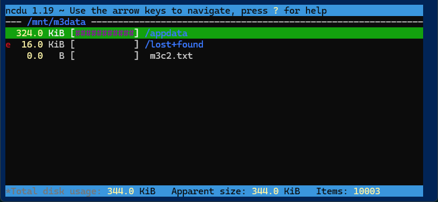

Laboratorio M3T2 - Diagnóstico de incidencias de almacenamiento
Diagnóstico y resolución de incidencias de almacenamiento mediante el análisis del espacio disponible, el consumo de inodos y la identificación de archivos eliminados que permanecen abiertos por procesos.
>_ Relevancia Operativa
Diagnóstico de incidencias de almacenamiento en sistemas Linux mediante el análisis de la capacidad disponible, el consumo de inodos y la distribución de archivos en los sistemas de archivos.
Identificación de archivos eliminados que permanecen abiertos
por procesos activos mediante el análisis de descriptores con
lsof, recuperación del espacio retenido y
verificación posterior de la disponibilidad del almacenamiento.
Contexto del incidente
En el servidor Ubuntu del laboratorio, una aplicación utiliza el
sistema de archivos montado en /mnt/m3data para
almacenar sus datos y archivos de registro. Este volumen está sujeto
a tareas de supervisión y mantenimiento del almacenamiento.
Incidencia observada
Presentación
1. Estado del almacenamiento
ricardo@ubuntu-lab:~$ df -h /mnt/m3data/
Filesystem Size Used Avail Use% Mounted on
/dev/mapper/vg_lab-lv_datos 2.5G 257M 2.1G 11% /mnt/m3data
ricardo@ubuntu-lab:~$ df -i /mnt/m3data/
Filesystem Inodes IUsed IFree IUse% Mounted on
/dev/mapper/vg_lab-lv_datos 163840 10014 153826 7% /mnt/m3data2. Comprobación del número de archivos
ricardo@ubuntu-lab:~$ sudo find /mnt/m3data/appdata -maxdepth 1 -type f | wc -l
100013. Eliminación del archivo de registro
ricardo@ubuntu-lab:~$ sudo rm /mnt/m3data/appdata/application.log4. Estado del almacenamiento
ricardo@ubuntu-lab:~$ df -h /mnt/m3data
Filesystem Size Used Avail Use% Mounted on
/dev/mapper/vg_lab-lv_datos 2.5G 257M 2.1G 11% /mnt/m3dataInterpretación
El sistema de archivos presenta un consumo de inodos del 7 %,
asociado a la presencia de 10.001 archivos en el directorio
/mnt/m3data/appdata. Aunque este consumo no representa
un agotamiento de inodos, constituye un incremento que conviene
analizar.
Tras eliminar el archivo de registro de gran tamaño, los valores de
espacio ocupado y disponible mostrados por
df no varían. La eliminación no ha producido la
recuperación de espacio esperada, por lo que es necesario investigar
qué elementos siguen ocupando almacenamiento en el sistema de
archivos.
Investigación y causa raíz
Análisis
1. Capacidad y disponibilidad de inodos
ricardo@ubuntu-lab:~$ df -h /mnt/m3data
Filesystem Size Used Avail Use% Mounted on
/dev/mapper/vg_lab-lv_datos 2.5G 257M 2.1G 11% /mnt/m3data
ricardo@ubuntu-lab:~$ df -i /mnt/m3data
Filesystem Inodes IUsed IFree IUse% Mounted on
/dev/mapper/vg_lab-lv_datos 163840 10014 153826 7% /mnt/m3data2. Distribución de archivos
Archivos existentes.
ricardo@ubuntu-lab:~$ sudo du -xhd1 /mnt/m3data
324K /mnt/m3data/appdata
16K /mnt/m3data/lost+found
344K /mnt/m3data
ricardo@ubuntu-lab:~$ sudo find /mnt/m3data -xdev -type f | wc -l
10001Directorios que concentran más archivos
ricardo@ubuntu-lab:~$ sudo find /mnt/m3data/ -xdev -type f -printf '%h\n' | sort | uniq -c | sort -nr
10000 /mnt/m3data/appdata
1 /mnt/m3dataExploración del consumo
ricardo@ubuntu-lab:~$ sudo ncdu /mnt/m3data
--- /mnt/m3data --------------------------------------------------------------------------------------
324.0 KiB [##############] /appdata
e 16.0 KiB [ ] /lost+found
0.0 B [ ] m3c2.txt3. Investigación sobre los archivos eliminados que siguen abiertos
ricardo@ubuntu-lab:~$ sudo lsof +L1
COMMAND PID USER FD TYPE DEVICE SIZE/OFF NLINK NODE NAME
systemd 1 root 121u REG 0,1 1402 0 1089 /memfd:data-fd (deleted)
systemd-l 779 root txt REG 252,0 285264 0 11256 /usr/lib/systemd/systemd-logind (deleted)
(sd-pam) 1141 ricardo txt REG 252,0 137792 0 11246 /usr/lib/systemd/systemd-executor (deleted)
tail 16987 root 3r REG 252,1 268435456 0 10014 /mnt/m3data/appdata/application.log (deleted)ricardo@ubuntu-lab:~$ sudo lsof -p "$(sudo cat /run/m3t2-holder.pid)"
COMMAND PID USER FD TYPE DEVICE SIZE/OFF NODE NAME
tail 16987 root cwd DIR 252,0 4096 524584 /home/ricardo/linux-lab/m03
tail 16987 root rtd DIR 252,0 4096 2 /
tail 16987 root txt REG 252,0 64032 20705 /usr/bin/tail
tail 16987 root mem REG 252,0 3055776 958 /usr/lib/locale/locale-archive
tail 16987 root mem REG 252,0 2129424 14525 /usr/lib/x86_64-linux-gnu/libc.so.6
tail 16987 root mem REG 252,0 236616 14522 /usr/lib/x86_64-linux-gnu/ld-linux-x86-64.so.2
tail 16987 root 0u CHR 136,1 0t0 4 /dev/pts/1
tail 16987 root 1w CHR 1,3 0t0 5 /dev/null
tail 16987 root 2u CHR 136,1 0t0 4 /dev/pts/1
tail 16987 root 3r REG 252,1 268435456 10014 /mnt/m3data/appdata/application.log (deleted)
tail 16987 root 4r a_inode 0,15 0 1062 inotify4. Confirmación de la retención de espacio
Eliminación del archivo de registro
ricardo@ubuntu-lab:~$ sudo rm /mnt/m3data/appdata/application.log
rm: cannot remove '/mnt/m3data/appdata/application.log': No such file or directoryEstado del almacenamiento
ricardo@ubuntu-lab:~$ df -h /mnt/m3data
Filesystem Size Used Avail Use% Mounted on
/dev/mapper/vg_lab-lv_datos 2.5G 257M 2.1G 11% /mnt/m3data
ricardo@ubuntu-lab:~$ sudo du -sh /mnt/m3data
344K /mnt/m3dataricardo@ubuntu-lab:~$ sudo lsof +L1
COMMAND PID USER FD TYPE DEVICE SIZE/OFF NLINK NODE NAME
systemd 1 root 121u REG 0,1 1402 0 1089 /memfd:data-fd (deleted)
systemd-l 779 root txt REG 252,0 285264 0 11256 /usr/lib/systemd/systemd-logind (deleted)
(sd-pam) 1141 ricardo txt REG 252,0 137792 0 11246 /usr/lib/systemd/systemd-executor (deleted)
tail 16987 root 3r REG 252,1 268435456 0 10014 /mnt/m3data/appdata/application.log (deleted)Interpretación
Las comprobaciones de capacidad muestran que el sistema de archivos
dispone de 2,1 GB libres y mantiene un consumo de inodos del 7 %. El
análisis de la estructura de directorios identifica 10.001 archivos
en el sistema de archivos, de los cuales 10.000 se concentran en
/mnt/m3data/appdata. Se confirma una elevada
concentración de archivos pequeños, aunque no existe agotamiento de
inodos.
La salida de lsof +L1 identifica un proceso
tail que mantiene abierto el archivo
application.log, de 256 MiB, cuyo número de enlaces al
sistema de archivos es cero (NLINK 0). La consulta de
sus descriptores confirma que el proceso conserva abierto el archivo
eliminado.
La comparación entre df y du confirma la
discrepancia: el sistema de archivos mantiene 257 MB ocupados,
mientras que los archivos accesibles desde el directorio ocupan
únicamente 344 KB. La diferencia corresponde al espacio retenido por
el archivo eliminado que continúa abierto por el proceso.
Conclusión
La causa raíz es la permanencia
de un descriptor abierto sobre un archivo eliminado. Mientras el
proceso mantenga abierto ese descriptor, el sistema de archivos no
puede liberar los bloques que ocupa.
Corrección aplicada
Liberación del espacio retenido
Finalización del proceso de prueba
ricardo@ubuntu-lab:~$ sudo kill "$(sudo cat /run/m3t2-holder.pid)"Comprobación
ricardo@ubuntu-lab:~$ sudo lsof +L1
COMMAND PID USER FD TYPE DEVICE SIZE/OFF NLINK NODE NAME
systemd 1 root 121u REG 0,1 1402 0 1089 /memfd:data-fd (deleted)
systemd-l 779 root txt REG 252,0 285264 0 11256 /usr/lib/systemd/systemd-logind (deleted)
(sd-pam) 1141 ricardo txt REG 252,0 137792 0 11246 /usr/lib/systemd/systemd-executor (deleted)
[1]+ Terminated sudo bash hold_log.sh (wd: ~/linux-lab/m03)
(wd now: ~)Recuperación de los inodos utilizados
ricardo@ubuntu-lab:~$ sudo rm -f /mnt/m3data/appdata/file_*.datInterpretación
La finalización del proceso tail cierra el descriptor
que mantenía abierto el archivo eliminado, permitiendo al sistema de
archivos recuperar los 256 MiB retenidos. La ausencia de dicho
archivo en la salida de lsof +L1 confirma que ya no
permanece abierto por el proceso de prueba.
También se eliminan los 10.000 archivos pequeños, permitiendo recuperar los inodos que ocupaban y reduciendo el consumo asociado a la acumulación de archivos en el directorio de datos.
Verificaciones posteriores
Matriz de verificación
| Prueba de validación | Comando de ejecución | Resultado esperado |
|---|---|---|
| Disponibilidad de espacio | df -h /mnt/m3data |
Recuperación del espacio ocupado por el archivo eliminado, con aproximadamente 2,4 GB disponibles. |
| Recuperación de inodos | df -i /mnt/m3data |
Reducción del número de inodos utilizados tras eliminar los 10.000 archivos pequeños. |
| Espacio ocupado por archivos | sudo du -sh /mnt/m3data |
Reducción del espacio ocupado tras eliminar los archivos de prueba. |
| Liberación de archivos eliminados | sudo lsof +L1 |
Ausencia de application.log en la lista de
archivos eliminados que permanecen abiertos.
|
Verificaciones
Disponibilidad de espacio
ricardo@ubuntu-lab:~$ df -h /mnt/m3data/
Filesystem Size Used Avail Use% Mounted on
/dev/mapper/vg_lab-lv_datos 2.5G 348K 2.4G 1% /mnt/m3dataRecuperación de inodos
ricardo@ubuntu-lab:~$ df -i /mnt/m3data/
Filesystem Inodes IUsed IFree IUse% Mounted on
/dev/mapper/vg_lab-lv_datos 163840 13 163827 1% /mnt/m3dataEspacio ocupado por archivos
ricardo@ubuntu-lab:~$ sudo du -sh /mnt/m3data/
344K /mnt/m3data/Liberación de archivos eliminados
ricardo@ubuntu-lab:~$ sudo lsof +L1
COMMAND PID USER FD TYPE DEVICE SIZE/OFF NLINK NODE NAME
systemd 1 root 121u REG 0,1 1402 0 1089 /memfd:data-fd (deleted)
systemd-l 779 root txt REG 252,0 285264 0 11256 /usr/lib/systemd/systemd-logind (deleted)
(sd-pam) 1141 ricardo txt REG 252,0 137792 0 11246 /usr/lib/systemd/systemd-executor (deleted)Interpretación
Las comprobaciones confirman la recuperación del espacio de almacenamiento retenido por el archivo eliminado, con 2,4 GB disponibles y una ocupación del 1 %. El consumo de inodos se reduce de 10.014 a 13, recuperando prácticamente la totalidad de los inodos utilizados por los archivos de prueba.
La ocupación del sistema de archivos se reduce a 344 KB según
du. Por último, lsof +L1 ya no muestra el
archivo application.log entre los archivos eliminados
que permanecen abiertos por procesos activos.
Conclusión
Se confirma la resolución de la
incidencia y la recuperación de la disponibilidad del
almacenamiento.
Evidencias de terminal
Identificación del archivo eliminado que permanece abierto
ricardo@ubuntu-lab:~$ sudo lsof +L1
COMMAND PID USER FD TYPE DEVICE SIZE/OFF NLINK NODE NAME
systemd 1 root 121u REG 0,1 1402 0 1089 /memfd:data-fd (deleted)
systemd-l 779 root txt REG 252,0 285264 0 11256 /usr/lib/systemd/systemd-logind (deleted)
(sd-pam) 1141 ricardo txt REG 252,0 137792 0 11246 /usr/lib/systemd/systemd-executor (deleted)
tail 16987 root 3r REG 252,1 268435456 0 10014 /mnt/m3data/appdata/application.log (deleted)ricardo@ubuntu-lab:~$ sudo lsof -p "$(sudo cat /run/m3t2-holder.pid)"
COMMAND PID USER FD TYPE DEVICE SIZE/OFF NODE NAME
tail 16987 root cwd DIR 252,0 4096 524584 /home/ricardo/linux-lab/m03
tail 16987 root rtd DIR 252,0 4096 2 /
tail 16987 root txt REG 252,0 64032 20705 /usr/bin/tail
tail 16987 root mem REG 252,0 3055776 958 /usr/lib/locale/locale-archive
tail 16987 root mem REG 252,0 2129424 14525 /usr/lib/x86_64-linux-gnu/libc.so.6
tail 16987 root mem REG 252,0 236616 14522 /usr/lib/x86_64-linux-gnu/ld-linux-x86-64.so.2
tail 16987 root 0u CHR 136,1 0t0 4 /dev/pts/1
tail 16987 root 1w CHR 1,3 0t0 5 /dev/null
tail 16987 root 2u CHR 136,1 0t0 4 /dev/pts/1
tail 16987 root 3r REG 252,1 268435456 10014 /mnt/m3data/appdata/application.log (deleted)
tail 16987 root 4r a_inode 0,15 0 1062 inotifyVerificación de la recuperación del almacenamiento
Estado del almacenamiento durante la incidencia
ricardo@ubuntu-lab:~$ df -h /mnt/m3data/
Filesystem Size Used Avail Use% Mounted on
/dev/mapper/vg_lab-lv_datos 2.5G 257M 2.1G 11% /mnt/m3data
ricardo@ubuntu-lab:~$ df -i /mnt/m3data/
Filesystem Inodes IUsed IFree IUse% Mounted on
/dev/mapper/vg_lab-lv_datos 163840 10014 153826 7% /mnt/m3dataEstado del almacenamiento tras la corrección
ricardo@ubuntu-lab:~$ df -h /mnt/m3data/
Filesystem Size Used Avail Use% Mounted on
/dev/mapper/vg_lab-lv_datos 2.5G 348K 2.4G 1% /mnt/m3dataricardo@ubuntu-lab:~$ df -i /mnt/m3data/
Filesystem Inodes IUsed IFree IUse% Mounted on
/dev/mapper/vg_lab-lv_datos 163840 13 163827 1% /mnt/m3dataImágenes
